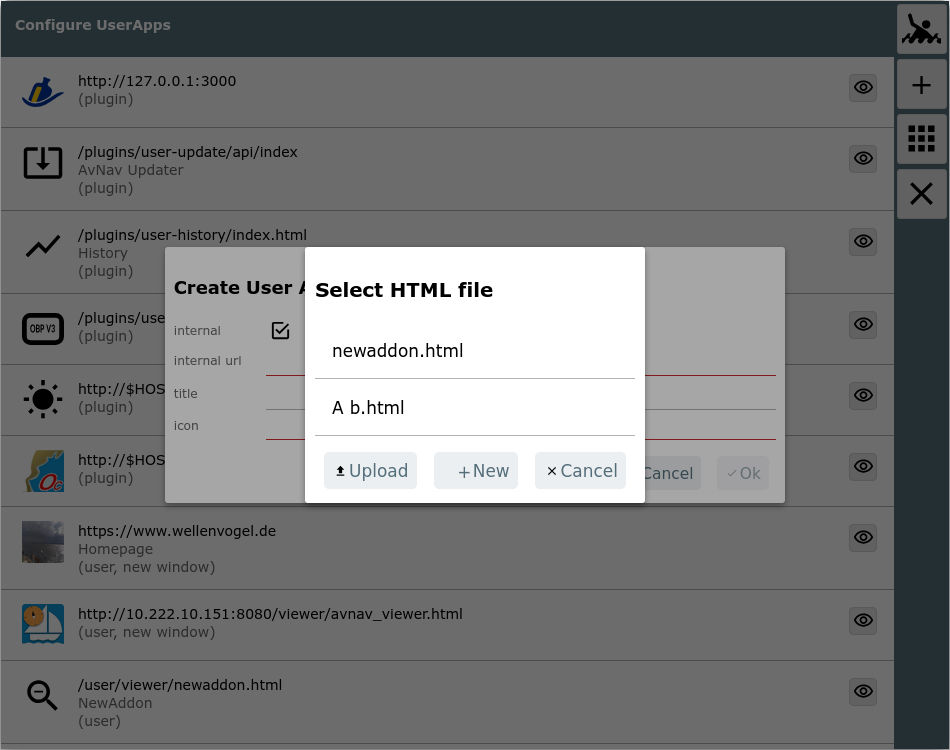

You will get here by clicking the  button on the settings
page
button on the settings
page
A user app is an external or internal HTML page to be shown at the user app page in an iframe.

All configured user apps will be shown.
| Icon | Name | Function |
| MOB | man over board (see main page) | |
| + | AddonConfigPlus | add a new configuration |
| AddonConfigAddOns | show the user app page | |
| Cancel | back to the previous page |
For each configuration the url and an optional title are displayed.
Additionally the origin of this configuration is indicated (plugin in the
screenshot). For defunct configurations (e.g. missing icon) "invalid" will
be shown. By clicking the configuration you can modify it. Clicking on  will take you to the user app page and the
selected configuration will be displayed there.
will take you to the user app page and the
selected configuration will be displayed there.
When adding or editing a configuration a dialog will open.

You can select to use either an internal or external HTML page (check box). In the screenshot an internal page is selected. If you select an external page you need to provide the complete url as http(s)://.... If the page lives on the same server as AvNav (like the signalk Web UI) you should replace the hostname with $HOST in your url. AvNav will automatically use the correct ip address in this case.
If you click internal URL you will get a dialog to select one of the available HTML files.

Additionally you can create a new HTML file (in the user dir) or upload
one from your local device.
Clicking on the "icon" row will bring up a dialog to select one of the
icons being available in AvNav (including user files and images). This
dialog also provides the option to directly upload an icon file from your
local device.

After saving you can directly test it using the  button.
button.
If "newWindow" (since version 20220225) is unchecked the web page will be displayed in an iframe - otherwise in a new browser window / browser tab.

Deleting a HTML file on the files/download
page will also remove any user app configuration holding an internal
URL referring to it.
If a icon file is deleted, the user app configuration referencing it will
remain, however it will turn invalid. Invalid configurations will not be
displayed at the user app page.
But you still can modify the configuration on this page to make it valid
again.
Whenever a user app configuration is stored, the server updates its
avnav_server.xml file. To avoid situations of AvNav not starting next time
(because something went wrong during this writing back), an
avnav_server.xml.ok file is written on every successful start of AvNav.
If AvNav is unable to start at a later point (due to a corrupted
avnav_server.xml) this fallback file will be read instead.